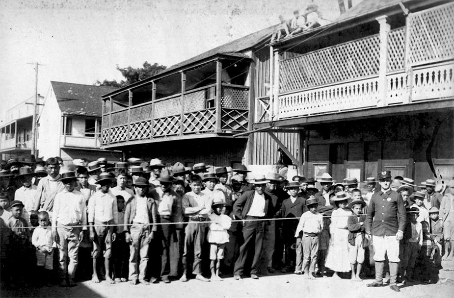

Why hasn't Asian American hate crime gone back down after the heat of the pandemic?

During the pandemic hate crimes against Asian Americans doubled. The problem is that the numbers haven't gone back down to what they used to be. Instead the floor has risen.
How we got here
In March 2020, during the start of the Covid-19 pandemic, Asian American hate crime reached its highest point since 2001 with 55 incidents that month alone. That month saw the largest number of incidents since the FBI began to track hate crime in 1991. A hate crime is defined as “A criminal act or attempted criminal act against an individual or group of individuals because of their actual or perceived race, color, religion, ancestry, national origin, sexual orientation, gender, or disability.” The FBI allows you to check off different biases that played a role in each crime which is how they gathered their data.
A hate crime is defined as:
“A criminal act or attempted criminal act against an individual or group of individuals because of their actual or perceived race, color, religion, ancestry, national origin, sexual orientation, gender, or disability.”
The COVID 19 virus originated from Wuhan China and first came to America in Washington State, the state with the third highest percentage of Asian Americans (10.8%). The second trace of the virus in America was in Chicago, the city with the seventh most Asian American residents.
According to Professor Junko Takeda, this wave of hate crime is not dissimilar to what happened in the 1890’s and 1900’s. In 1899 a plague coming from Hong Kong landed in Honolulu causing the local government to seal off Chinatown. “The BoH [Board of Health] blamed the residents of Chinatown for the outbreak, reflecting long-held racist stereotypes about their standards of cleanliness or the foods they ate.” Eventually the Board of Health decided to burn places where the plague had been traced, eventually resulting in 4000 misplaced people. Similarly a plague in San Francisco from Asia found a home in Chinatown from 1900-1904 causing more anti-Asian immigrant sentiment.

“It was a medical crisis, and so it was similar in terms of the stigmatizing of Asian populations as diseased and vectors of disease and the hate that was perpetrated” Takeda said.
Takeda also believes some of the rhetoric used by then-president Donald Trump worked against Asian Americans and may have created an unhealthy stigma surrounding the virus. Trump used terms like “Chinese Virus” in March 2020 and “kung flu” in June 2020, both problematic and debatably xenophobic terms that directly affiliate the virus with Chain.
““[Trump] says that he's not saying anything bad, right? But the rhetoric actually justifies the behavior” Takeda said.
The initial rise and peak in March 2020 makes sense as it aligns with the start of the pandemic. However, 12 months later in March 2021, that number reached 130 incidents highlighted by spa shootings in Atlanta that left eight dead. That same month wasn’t a busy month for the virus as the seven-day average was around 50,000 cases compared to an average near 175,000 cases in January.
The response and the future
In response to the all-time high numbers President Biden signed the COVID-19 Hate Crimes Act that May. According to Barbara Sprunt of NPR, the act “aims to make the reporting of hate crimes more accessible at the local and state levels by boosting public outreach and ensuring reporting resources are available online in multiple languages.”
The most concerning statistic now is that hate crimes targeted towards Asian Americans have a much higher average than pre-COVID society even when you exclude outlier months. From January 2014-December 2019 there were an average of 11.8 reported incidents per month and 850 total. From January 2022-December 2023 the average was almost 40 incidents per month and 957 total in that two year stretch. So why in a society that was mostly back to normal, did hate crimes stay concerningly high?
Takeda believes that two main factors: legislation, and more reporting led to the higher numbers. Biden’s COVID-19 Hate Crimes Act aimed to make hate crime reporting more accurate which has led to more reporting since it is accessible to more people. Additionally, once the public began to see the newsworthy numbers in 2020 and 2021, Asian American hate crime became more front of mind leading to more people looking out for it and reporting it.
“Reporting has become much more good, in the sense that Asians know that they can report these things,” Takeda said. “Whereas back in the day, it was more like, keep your head down and don't bother reporting.”
Since more people have access to reporting these crimes and since it is more front of mind, it is easier to see why the numbers after the heat of COVID remain high. Concerningly, this raises the point that there were also high amounts of hate crimes before COVID that didn’t go reported.
Takeda remains slightly hopeful that the numbers will drop again since Asian immigration and the Asian American population is increasing. The thought is that the more Asian Americans there are, the more accustomed to them other people will become. According to Pew Research Center, “Asian Americans are the only major racial or ethnic group in the United States that is majority immigrant.” Out of the 24 million Asian American about 54% are immigrants.
“So I think in terms of the numbers, and you see second generation, third generation, etc, become much more American. The numbers are working against racism,” Takeda said.